.png)
[8730] 선물옵션주문종합1
한눈에 보는 파생상품,
전략도 실행도 한번에
[8860] 선물옵션주문종합1은 선물 · 옵션 종목의 가격 변동 및 거래 동향을 실시간으로 확인하고 즉시 주문까지 연결할 수 있는 통합 파생상품 거래 플랫폼입니다.
뉴스, 차트, 계좌 잔고, 매매 현황 등 다양한 정보가 유기적으로 연동되어 있어, 복잡한 시장 상황과 내 자산 현황을 한눈에 파악하고, 투자 방향을 신속하게 판단해 실행에 옮길 수 있는 최적의 환경을 제공합니다.
한눈에 확인하고, 주문은 신속하게
이 화면이 파생 주문에 최적화된 이유!
| 특징 | 이런 점이 좋아요 |
|---|---|
| 통합 시세 구성 | 선물 · 옵션 종목의 현재가, 호가, 거래량을 통합 제공하여 시장 흐름을 한눈에 파악 |
| 신속한 주문 연계 | 실시간 시세 파악부터 주문 실행 및 관리까지, 화면 이동 없이 즉시 대응 가능 |
| 다양한 투자 정보 제공 | 종목별 뉴스, 차트, 잔고 등 주요 정보를 한 화면에서 통합 분석하여 전략 수립에 활용 |
| 매매 상황 모니터링 | 실시간 체결 정보와 잔고 현황 등을 기반으로 투자 현황을 한눈에 파악하고 손쉽게 관리 |
정보와 주문을 하나의 흐름에,
01 기본 화면 구성
LS증권의 [8730]선물옵션주문종합1 화면은 주요 종목 시세를 실시간으로 확인하고, 우측 주문 영역에서 즉시 매매할 수 있습니다. 뉴스·차트·잔고 정보가 함께 연동되어 빠른 판단과 실행이 가능합니다.
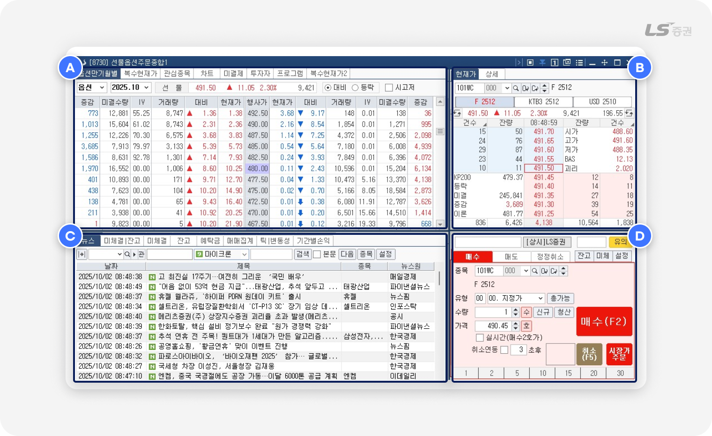
화면은 다음과 같이 4개의 영역으로 나누어져 있으며, 다양한 정보를 동시에 조회하면서 필요한 기능을 즉시 이용할 수 있도록 배치되어 있습니다.
| 번호 | 영역 | 주요기능 |
|---|---|---|
| A | 종목 투자 정보 | 종목 시세, 차트, 요건별 체결 추이 등 시장 전반의 현황을 파악할 수 있습니다. |
| B | 호가 정보 | 선택 종목의 매수/매도 호가 및 상세 지표를 조회할 수 있습니다. |
| C | 주문 / 계좌 관리 | 뉴스, 주문현황, 계좌 잔고 등 자산 현황을 확인할 수 있습니다. |
| D | 주문 실행 | 매수/매도/정정/취소 주문을 접수할 수 있습니다. |
다양한 시선에서 시장을 살피는,
02 종목 투자 정보 (A영역)
옵션만기월별
선택한 기초자산의 각 만기월별 콜·풋 옵션의 현재가, 등락률, 거래량, 미결제약정 등 주요 시세 정보를 한눈에 비교할 수 있습니다.
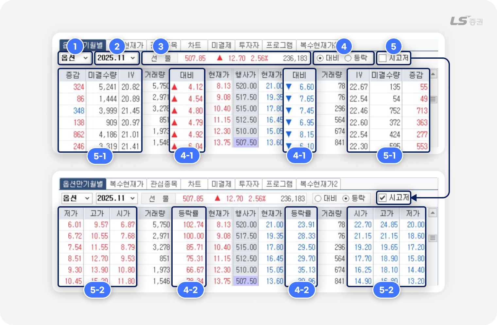
-
1
옵션 종류 선택
- 옵션의 종류를 선택하여 조회할 수 있습니다.
항목 설명 옵션 (코스피200옵션) 거래소에 상장된 200개 종목의 시가총액 기준으로 산출한, 코스피200지수를 거래대상으로 하는 상품입니다. M옵션 (미니옵션) 코스피200옵션과 동일한 지수를 거래대상으로 하나, 거래 단위가 1/5로 축소된 소액 거래용 상품입니다. Q옵션 (코스닥150옵션) 코스닥 시장에 상장된 150개 종목의 시가총액 기준으로 산출한, 코스닥150지수를 거래대상으로 하는 상품입니다. W옵션 (위클리옵션) 상장된 주권 200종목의 시가총액 기준으로 산출된 코스피200 지수를 거래대상으로 하는 상품으로, 거래기간이 1주로 짧은 것이 특징입니다. -
2
옵션 만기일 선택
- 옵션의 만기일을 선택하여 조회할 수 있습니다.
-
3
선물 현재가
- 선물의 현재가, 등락률, 거래량 현황을 확인할 수 있습니다.
-
4
행사가별 조회 지표 선택
- ‘대비’ 선택 시 행사가별 대비 항목이 (4-1번)과 같이 표시됩니다.
- ‘등락’ 선택 시 행사가별 등락률 항목이 (4-2번)과 같이 표시됩니다.
-
5
시고저 지표 조회
- 해제 시 행사가별 IV(내재변동성), 미결수량, 증감 항목이 (5-1번)과 같이 표시됩니다.
- 체크 시 행사가별 시가, 고가, 저가 항목이 (5-2번)과 같이 표시됩니다.
IV (내재 변동성) vs HV (역사적 변동성)
-
I.V(내재 변동성) :
향후 가격 변동성에 대한 시장의 미래 기대치를 나타낸 지표로, I.V가 높을수록 시장 변동이 클 것으로 예상되며 옵션 프리미엄(가격)도 높아집니다.
옵션 매수자는 I.V가 낮을 때, 옵션 매도자는 I.V가 높을 때 시장에 진입하는 것이 대체로 유리한 편으로 인식합니다. -
H.V(역사적 변동성) :
과거 일정 기간 동안 기초자산 가격이 실제로 얼마나 변동했는지를 수치로 나타낸 지표입니다. H.V가 높을수록 과거에 가격 변동이 높았으며, 낮을수록 안정적인 흐름을 보였다는 뜻입니다. 내재변동성이 미래에 대한 시장의 기대치라면, 역사적 변동성은 실제로 과거에 일어난 움직임을 보여주는 지표로, 두 값을 비교하면 현재 옵션 가격이 합리적인지 판단하는 데 도움이 될 수 있습니다.
복수현재가
두 선물 · 옵션 종목의 5호가, 체결가, 거래량 등 시세를 동시에 조회할 수 있으며, 종목 간의 격차 또는 연관성을 빠르게 비교 분석할 수 있습니다.
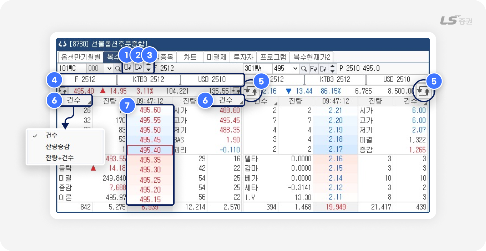
-
1
선물 / 옵션 전환
- 클릭 시 동일 만기일의 선물(F)과 옵션(O) 종목을 전환할 수 있습니다.
-
2
콜옵션/ 풋옵션 전환
- 클릭 시 동일 종목의 콜옵션(C)과 풋옵션(P) 종목을 전환할 수 있습니다.
-
3
선물 / 옵션 상품 돌려보기
- 조회중인 종목이 선물인 경우, 만기일 및 상품을 차례로 전환하며 호가를 조회할 수 있습니다.
- 조회중인 종목이 옵션인 경우, 해당 만기일의 행사가를 차례로 전환하며 호가를 조회할 수 있습니다.
-
4
주요 선물 근월물
- 클릭 시 주요 선물 상품의 근월물을 빠르게 조회할 수 있습니다.
항목 설명 F (코스피200선물) 거래소에 상장된 200개 종목의 시가총액 기준으로 산출한, 코스피200지수를 거래대상으로 하는 상품입니다. KTB3 (3년 국채선물) 3년 만기 국채를 기초자산으로 한 선물로, 5% 이표의 가상채권을 거래 대상으로 합니다. 실제 거래되는 국채들의 평균 수익률을 기준으로 가격이 산출됩니다. USD (미국달러선물) 미래의 일정시점에 인수도할 미국 달러화를 현재시점에서 미리 매수하거나 매도하는 계약입니다. -
5
시세 정보 전환
- 전환 버튼으로 호가 영역 좌하단 및 우상단 시세 정보 영역을 시세, 체결 정보, 차트 등으로 전환할 수 있습니다.
-
6
초기수량 설정
- 조회하려는 체결량 정보를 건수, 잔량증감, 잔량÷건수 중 선택할 수 있습니다.
-
7
호가 영역
- 클릭 시 주문 실행 영역(D)의 가격란에 선택한 호가가 입력됩니다.
- 더블클릭 시 [5700]선옵일반주문에서 선택한 호가로 주문할 수 있습니다.
관심종목
관심종목으로 등록한 선물·옵션 종목의 시세를 실시간으로 확인하고, 관심종목의 추가 · 삭제도 가능합니다.
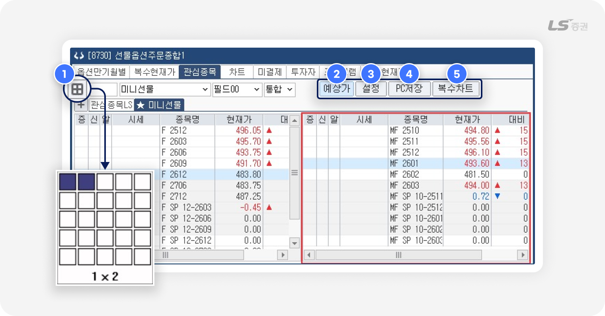
-
1
그룹 배치 설정
- 여러 종목의 현재가를 원하는 개수와 배치로 구성할 수 있습니다.
-
2
예상가
- 종목의 예상체결가, 예상대비 등 예상가 정보로 전환하여 표시합니다.
-
3
설정
- 관심종목설정 팝업에서 관심그룹, 관심종목, 필드, 알람 등을 설정할 수 있습니다.
-
4
PC저장
- 관심종목 그룹 및 목록의 편집사항을 PC에 저장합니다.
-
5
복수차트
- 복수 종목을 선택하여 [4000] 통합차트 또는 [4201] xing차트1 에서 여러 종목의 차트를 동시 조회할 수 있습니다.
차트
선택한 종목의 가격 추세를 차트로 시각화해 보여줍니다.
기간별 · 분봉 · 틱 단위로 조회 범위를 설정할 수 있으며, 기술적 지표도 적용할 수 있습니다.
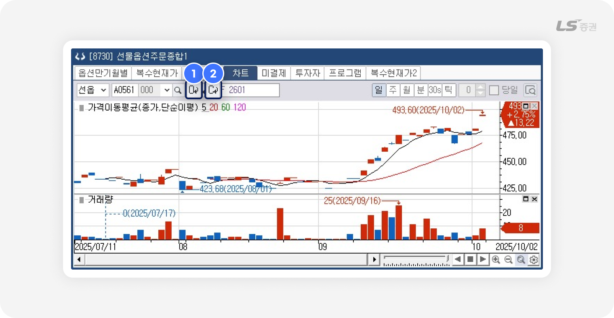
-
1
선물 / 옵션 전환
- 클릭 시 동일 만기일의 선물(F)과 옵션(O) 종목을 전환할 수 있습니다.
-
2
콜옵션 / 풋옵션 전환
- 클릭 시 동일 종목의 콜옵션(C)과 풋옵션(P) 종목을 전환할 수 있습니다.
미결제
선택 종목의 가격 추이 미결제약정 현황을 보여주는 화면입니다.
전체 시장의 포지션 누적 변화를 통해 매수·매도 세력의 흐름을 확인할 수 있습니다.
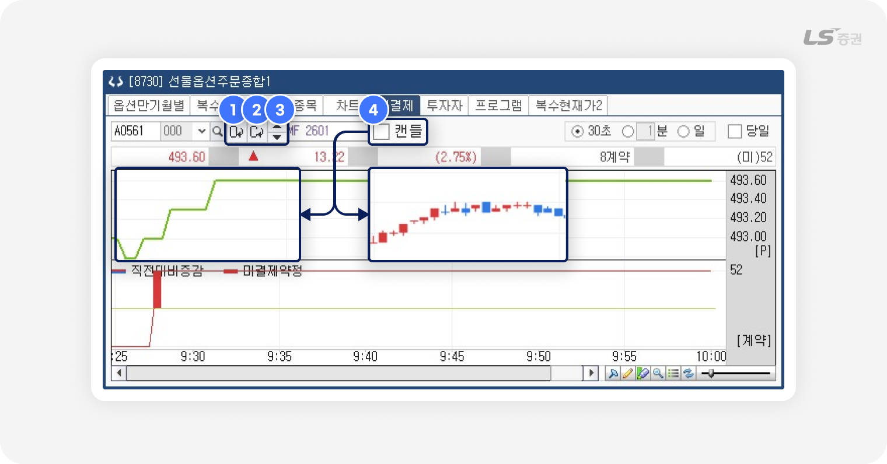
-
1
선물 / 옵션 전환
- 클릭 시 동일 만기일의 선물(F)과 옵션(O) 종목을 전환할 수 있습니다.
-
2
콜옵션 / 풋옵션 전환
- 클릭 시 동일 종목의 콜옵션(C)과 풋옵션(P) 종목을 전환할 수 있습니다.
-
3
선물 / 옵션 상품 돌려보기
- 조회중인 종목이 선물인 경우, 만기일 및 상품을 차례로 전환하며 호가를 조회할 수 있습니다.
- 조회중인 종목이 옵션인 경우, 해당 만기일의 행사가를 차례로 전환하며 호가를 조회할 수 있습니다.
-
4
차트 종류 선택
- 해제 시 가격 추이를 선차트로 표시합니다.
- 체크 시 가격 추이를 캔들 차트로 표시합니다.
투자자
개인, 기관, 외국인 등 주요 투자자 주체별 순매수·순매도 동향을 통해 최근 수급 변화 추이를 비교하고 시장의 방향성을 가늠할 수 있습니다.
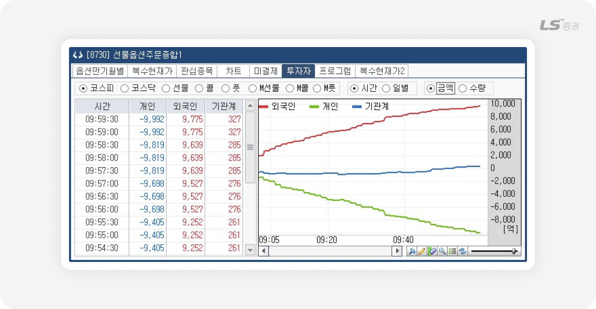
프로그램
차익 · 비차익 거래 및 순매수 · 순매도 규모를 통해 프로그램 매매의 시장 영향력을 분석할 수 있습니다.
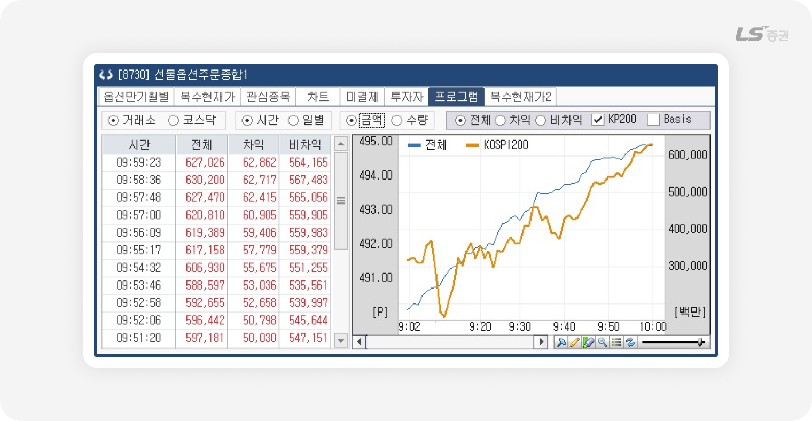
복수현재가2
복수 종목의 현재가를 동시에 최대 3건까지 조회할 수 있습니다.
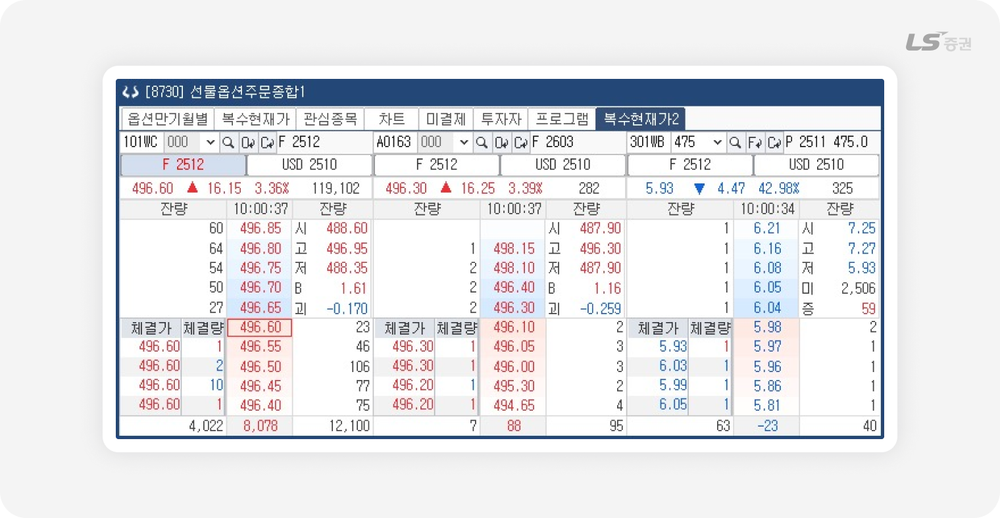
상품의 정보를 상세히 살펴보는,
03 호가 정보 (B영역)
현재가 · 상세
선택한 종목의 5호가 현재가 및 거래량, 미결제약정, 체결강도 등 세부 지표를 조회할 수 있습니다.
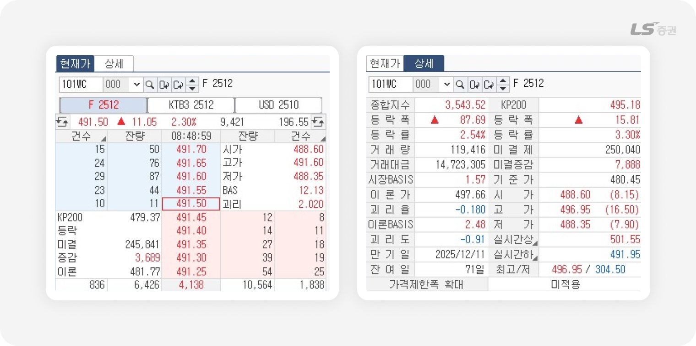
선물/옵션에서 사용하는 가격 지표 소개
-
현재가 :
시장에서 거래되는 종목의 실시간 가격으로, 매매 시점의 시장 가치를 확인할 수 있는 기본 지표입니다.
-
이론가 :
종목을 가격결정모형을 적용해 계산한 이론적인 가격으로, 실제 시장가격과 비교하여 고평가· 저평가 여부를 판단할 수 있습니다.
-
만기가 :
해당 상품의 만기 시점에 정산 및 결제에 사용되는 확정 가격으로, 옵션의 경우 KOSPI200 최종결제지수, 선물의 경우 최종 결제가격이 적용됩니다.
옵션 민감도란?
옵션 민감도(Greeks)란 시장 상황의 변화에 따라 옵션가격이 민감하게 움직이는 정도를 수치화한 값으로, 옵션의 미래를 예측하는 분석지표로 활용합니다.
옵션 민감도에는 델타, 감마, 베가, 세타, 로 등이 있습니다.
- 델타(Delta) : 기초자산 가격 변화에 따른 옵션가격의 변화 정도
- 감마(Gamma) : 기초자산 가격 변화에 따른 옵션 델타의 변화 정도
- 베가(Vega) : 기초자산 가격의 변동성 1%p 변동에 대한 옵션가격의 변화 정도
- 세타(Theta) : 잔존일수 1일 경과에 대한 옵션가격의 변화 정도
- 로(Rho) : 금리의 1%p 변화에 따른 옵션가격의 변화 정도. 지표가 옵션 가격에 미치는 영향은 적은 편
베이시스와 괴리율이란?
베이시스와 괴리율은 현물지수(예 : 코스피)와 선물가격 사이의 차이를 분석할 때 사용하는 지표로,
프로그램 매매에서 고평가 · 저평가 상태를 판단하고 차익거래의 기회를 찾는 데 활용됩니다.
-
베이시스 :
시장에서 실제로 거래되는 선물가격과 이론적으로 계산된 선물가격의 차이를 의미합니다.
베이시스가 증가하면(+) 선물 매수가 증가하고, 감소하면(-) 선물 매도가 증가할 가능성이 높습니다. -
괴리율 :
실제 시장의 베이시스가 이론적으로 계산된 베이시스의 값과 얼마나 다른지 백분율(%)로 계산한 수치입니다. 괴리율이 (+)인 경우 선물 고평가 상태, (-)인 경우 선물 저평가 상태입니다. 또 괴리율이 0에 가까워질수록 시장이 균형 상태에 가까워지고 차익거래 압력이 완화되는 것으로 해석할 수 있습니다.
예를 들어 현물 330.00, 선물 331.00인 경우 베이시스는 +1.00p, 괴리율은 +0.30%가 됩니다.
이 경우 선물이 고평가되고 현물이 저평가된 상태이므로, 일반적으로 현물 매수 · 선물 매도 방향의 차익거래가 나타날 수 있습니다.
내역 확인부터 관리까지,
04 주문 / 계좌 관리 (C영역)
뉴스
선택 종목 또는 관련 시장 뉴스를 통해 시황 변화나 주요 이슈를 파악할 수 있습니다.
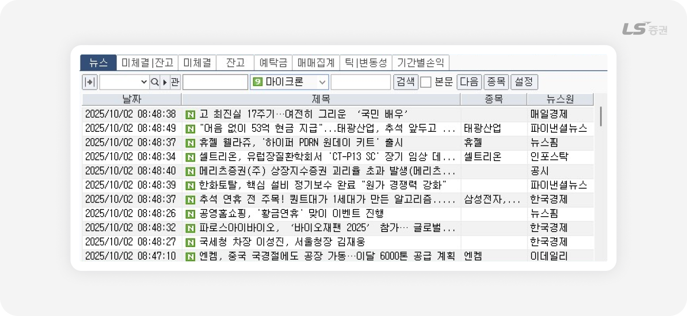
미체결|잔고
당일 미체결 주문 내역과 보유 잔고를 간편하게 확인하고, 필요 시 주문으로 빠르게 연결할 수 있습니다.
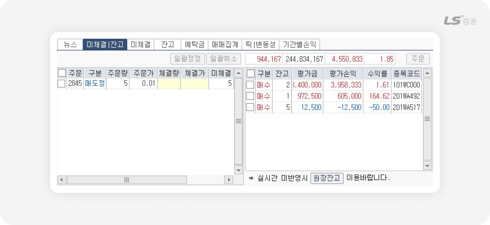
미체결
당일 전체 주문 내역을 상세하게 확인하고, 체결 대기중인 주문을 정정하거나 취소할 수 있습니다.
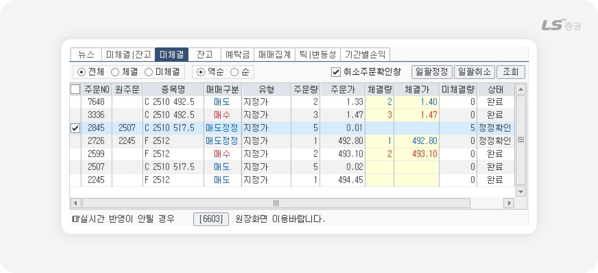
잔고
보유 잔고 현황과 평가손익, 수익률 현황을 상세하게 조회하고, 잔고에서 종목을 선택해 주문할 수 있습니다.
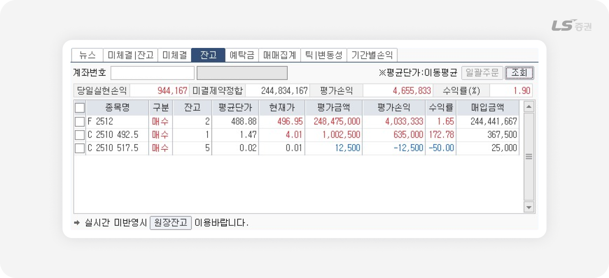
예탁금
현재 보유 중인 예탁금 현황과 선물·옵션 포지션의 계약수, 평가손익 등을 조회하고, 청산 주문을 접수할 수 있습니다.
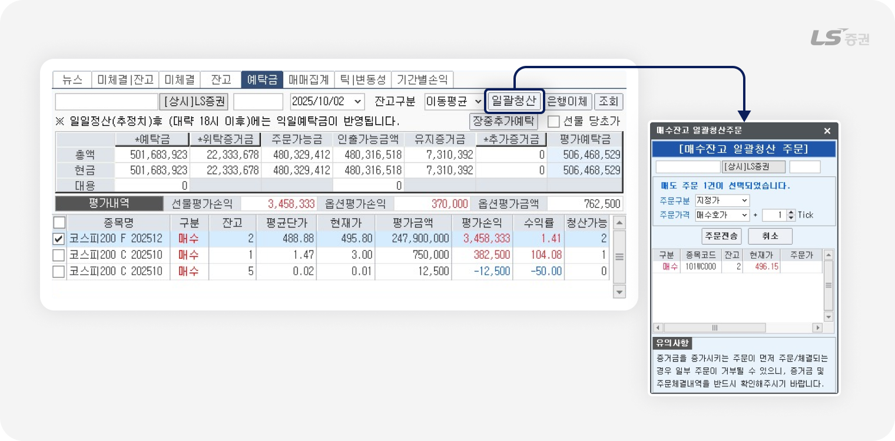
매매집계
당일 매매 수익률, 거래량, 손익 합계 요약을 통해 매매 성과를 점검할 수 있습니다.
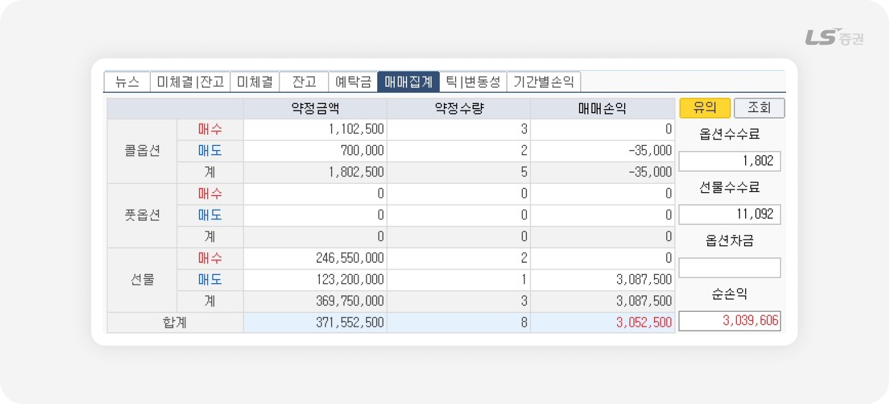
틱|변동성
종목의 당일 거래 추이를 틱 또는 일정 시간 단위에 따라 차트 및 수치로 조회할 수 있습니다.
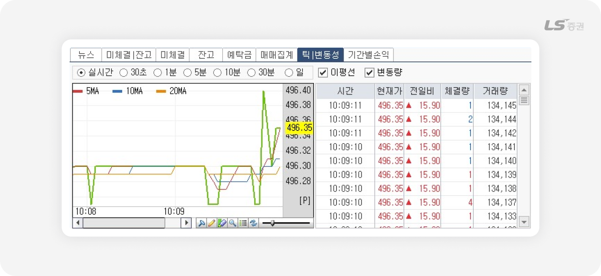
기간별손익
설정한 기간 동안 누적 손익의 성과 변화를 추적할 수 있습니다.
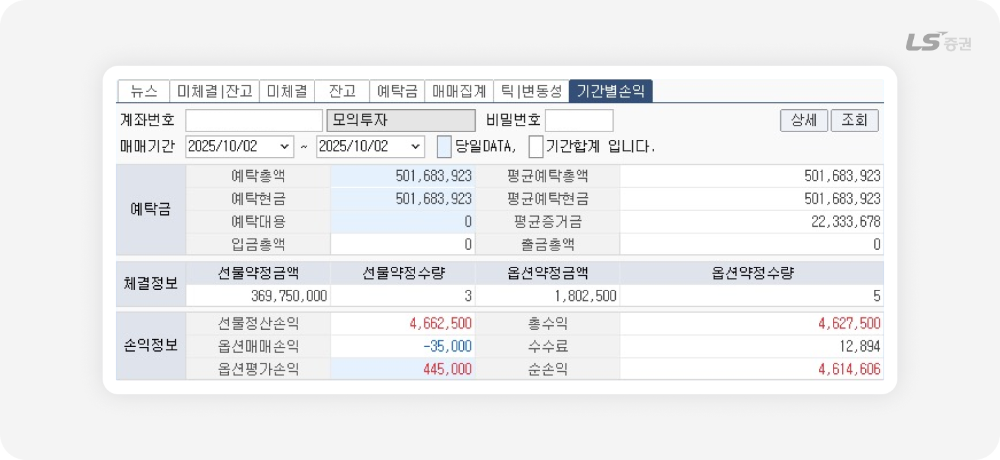
판단은 즉시, 실행은 정교하게
05 주문 실행 (D영역)
매수 · 매도 · 정정 · 취소
매수/매도 주문과 정정/취소 주문 기능을 통합하여 신속하게 주문을 관리하고, 단축키로 주문을 빠르게 접수할 수 있습니다.
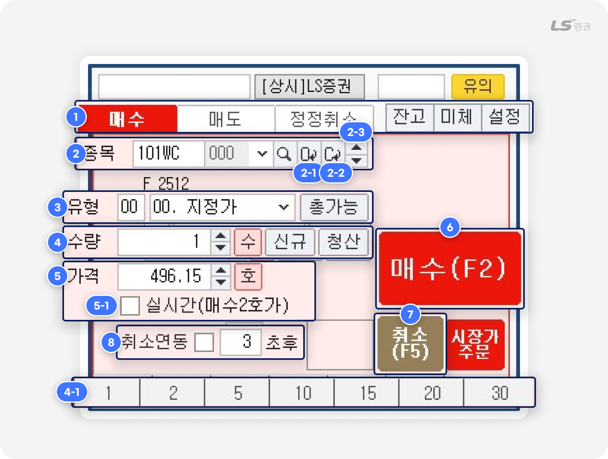
-
1
주문 버튼 및 연동 기능
- 매수/매도/정정취소 버튼이 나란히 배치되어 있으며, 입력한 조건에 따라 즉시 주문을 실행할 수 있습니다.
- 우측의 잔고 미체(미체결), 설정 버튼을 통해 관련 기능 화면으로 빠르게 전환할 수 있습니다.
-
2
종목 선택
- (2-1번) 선물 / 옵션 전환 : 동일 만기일의 선물(F)과 옵션(O) 종목을 전환할 수 있습니다.
- (2-2번) 콜옵션 / 풋옵션 전환 : 클릭 시 동일 종목의 콜옵션(C)과 풋옵션(P) 종목을 전환할 수 있습니다.
-
(2-3번) 선물 / 옵션 상품 돌려보기 :
- 1) 조회 종목이 선물인 경우, 만기일 및 상품을 차례로 전환하며 호가를 조회할 수 있습니다.
- 2) 조회 종목이 옵션인 경우, 해당 만기일의 행사가를 차례로 전환하며 호가를 조회할 수 있습니다.
-
3
주문유형 선택
- 유형번호를 직접 입력하거나 목록에서 주문유형을 선택할 수 있습니다.
-
4
주문 수량 입력
- 수량을 직접 입력하거나 '수' 버튼을 클릭하여 표시되는 팝업에서 설정된 수량을 선택할 수 있습니다.
- ‘총가능’ 버튼 클릭 시 매수가능한 수량이 입력됩니다.
- ‘신규’ 클릭 시 신규 주문 가능한 계약수가, '청산' 클릭 시 청산 가능한 보유잔고가 입력됩니다.
-
수량 입력 버튼(4-1번) 클릭 시 해당 수량이 누적 입력됩니다.
(예 : 매수 주문창에서 수량 '5' 와 '20' 버튼 클릭 시 '25'가 입력)
-
5
주문가격 입력
- 가격을 직접 입력하거나 ‘호’ 버튼을 클릭하여 표시되는 호가창에서 선택할 수 있습니다.
- ‘실시간’ (5-1번) 체크 시 종목의 현재가 변동에 따라 주문가격이 실시간으로 변경됩니다.
- 입력되는 실시간 가격의 기준은 '설정' 버튼에서 변경할 수 있습니다.
-
6
매수 주문 / 매도 주문 버튼
- 직접 클릭하거나 단축키로 매수 주문(F2) 또는 매도 주문(F3)을 할 수 있습니다.
-
7
주문 취소 버튼
- 매수/매도 화면에서도 버튼이나 단축키로 빠르게 미체결 주문을 취소(F5) 할 수 있습니다.
-
8
주문 자동 취소
- ‘취소연동’ 체크 시, 주문 후 일정 시간 이내에 주문이 체결되지 않으면 주문이 자동으로 취소됩니다.
주문유형 정리
| 지정가 | 지정한 가격으로 주문 |
|---|---|
| 시장가 | 주문단가를 지정하지 않고 시장에서 형성되는 가격으로 자동 지정 |
| 조건부 | 장마감까지 지정가에 주문이 체결되지 않을 경우, 시장가로 주문가격이 전환되어 체결 |
| 최유리지정가 | 상대 1차 호가에 지정 |
FOK / IOC 주문조건이란?
-
FOK(Fill-Or-Kill)은 모든 수량을 체결할 수 있을 때만 주문을 체결하고, 단 1주라도 체결할 수 없으면 주문 전체를 취소합니다.
예) 50주 주문 시 40주만 체결 가능한 경우, 50주 주문 전체를 취소합니다. -
IOC(Immediate-Or-Cancel)은 체결 가능한 수량만큼 체결하고, 체결되지 않은 잔량은 취소합니다.
예) 50주 주문 시 40주만 체결 가능한 경우, 40주를 체결하고 10주는 취소합니다.
선물/옵션 주문 설정 기능
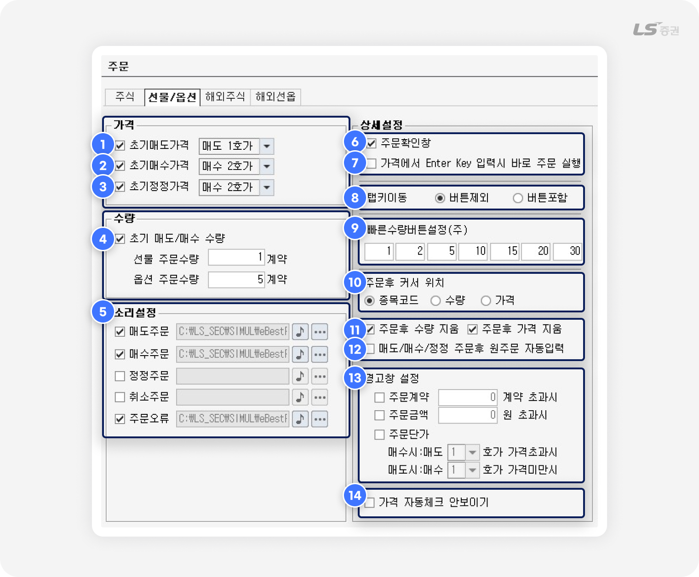
-
1
초기매도가격 : 체크 시 매도 주문화면에서 주문가격에 초기 설정 가격이 자동 입력됩니다.
-
2
초기매수가격 : 체크 시 매수 주문화면에서 주문가격에 초기 설정 가격이 자동 입력됩니다.
-
3
초기정정가격 : 체크 시 정정 주문화면에서 주문가격에 초기 설정 가격이 자동 입력됩니다.
-
4
초기 매도/매수 수량 : 체크 시 매도/매수/정정 주문화면에서 주문수량에 초기 설정 수량이 자동 입력됩니다.
※ 설정 후 주문화면에서 '실시간' 체크 시 현재가 변화에 따라 실시간으로 주문가격 입력값이 자동 변경됩니다.
-
5
주문 접수가 완료되거나 주문 오류 발생 시 소리로 알려주는 알림음을 설정할 수 있습니다.
-
6
주문확인창 : 체크 시 착오주문 방지를 위해 주문 실행 전 확인창을 표시합니다.
-
7
Enter Key 입력시 주문 실행 : 체크 시 가격 입력창에서 엔터(Enter) 키 입력 시 즉시 주문이 접수됩니다.
-
8
탭키이동 : 탭 키로 이동할 때 '총가능' '신규' '청산' 등 주문수량을 지정하는 버튼의 포함 여부를 선택합니다.
-
9
빠른 수량 버튼 설정 : · 클릭 시 주문수량이 자동으로 누적 입력되는 버튼을 7개까지 설정할 수 있습니다.
-
10
주문후 커서위치 : 주문 후 커서가 이동할 곳을 지정합니다.
-
11
주문후 수량 / 가격지움 : 체크 후 주문 시 입력한 수량 또는 가격을 주문 실행 후 유지하지 않고 삭제합니다.
-
12
매도/매수/정정 주문후원주문 자동입력 :
체크 시 정정/취소 주문 화면을 조회하면 최근 매도/매수/정정 주문 번호가 자동 입력됩니다.
-
13
매수/매도 주문 시 설정한 조건에 부합할 경우 주문 전 경고창을 표시해 주문 실수를 방지하도록 도와줍니다.
-
14
가격 자동체크 안보이기 : 체크 시 주문 화면의 실시간 가격 자동입력 체크박스를 숨깁니다.
지금까지 LS증권 투혼 HTS [8730] 선물옵션주문종합1 을 알아보았습니다.
시장의 움직임을 빠르게 읽고, 주문까지 이어지는 실전 트레이딩 환경을 직접 활용해 보세요.
감사합니다!